Hough Transform for Straight Lines
CODE:
Hough Transform
- hough.m - creates the accumulator image for straight lines.
- hough_decrement.m - same, but also runs a "decrement" phase as described in [1].
- findmaxima.m - locates maxima in the accumulator image.
- drawlines.m - draws the lines from parameters on original image.
- drawpoints.m - draws the parameters on accumulator image.
Smoothing and Edge Detection (reused from previous project)
- makeDiff1D.m - creates a 1D derivative estimation filter.
- makeGauss1D.m - creates a 1D Gaussian smoothing filter.
- convolve.m - convolves a separable 1D filter and an image in both directions.
- convolve1D.m - convolves a 1D filter and an image in one direction.
- edgeMap.m - generates the edge map (ie gradient magnitude) of an image. This function makes use of the derivative code above as well.
- orientationMap.m - generates the orientation map (ie gradient orientation). Also makes use of the derivative code above.
- rescaleDiffImage.m - helper function that shifts and scales the intensities in a derivative image so they are in the range [0,255]. Only used for display purposes.
I've created a hough function that takes an edge image and the range of $\theta$ values, from the theta values it determines how large of an accumulator image is needed, for simplicity the resolution of the $\rho$ values are set to the same (accumulator is a square image). The accumulator is generated by iterating over all $\theta$, and calculating $\rho=x cos \theta + y sin \theta$ for each x,y edge point.
A second hough_decrement function was created to run a second "decrement" phase, as described in [1].
I've made use of my previous edge detection and image smoothing code, as indicated above. I've copied the edge detection and rescaling (for viewing) functions from the previous edge detection project.
EXAMPLES:
| 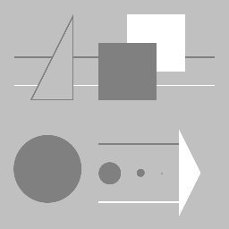 Original | |
| 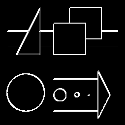 Edge map | 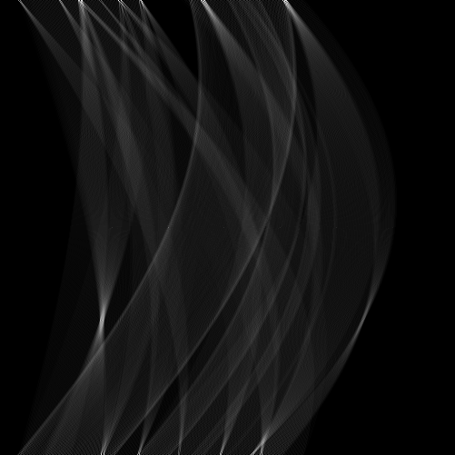 Accumulation image ($\theta$ on x-axis, $\rho$ on y-axis) |
|
The above example shows the hough transform for a straight line applied to the edge map of the image with shapes above. As you can see the accumulator image shows the curves in parameter space representing each of the points on the edge map. | |
| 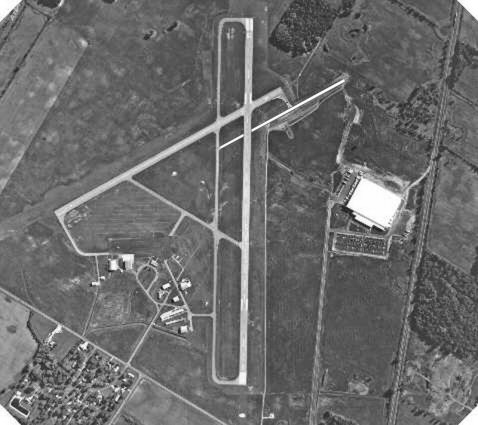 Original | |
| 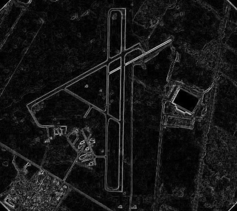 Edge map | 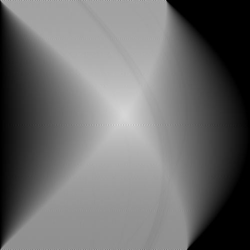 Accumulation image ($\theta$ on x-axis, $\rho$ on y-axis) |
| 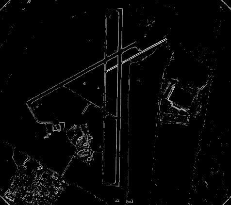 Edge map | 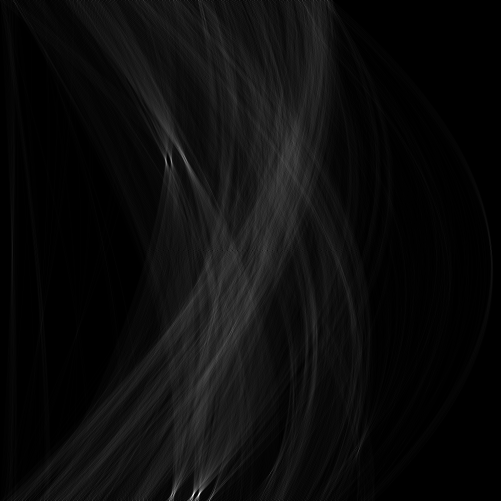 Accumulation image ($\theta$ on x-axis, $\rho$ on y-axis) |
|
Here we see the hough transform for a straight line applied to the edge map of the image with a runway shown above. Again, the accumulator image shows the curves in parameter space representing each of the points on the edge map. In this case the curves are much less distince, because the edges are much less sharp - as is expected with real photographs. | |
Raw Accumulator | |
| 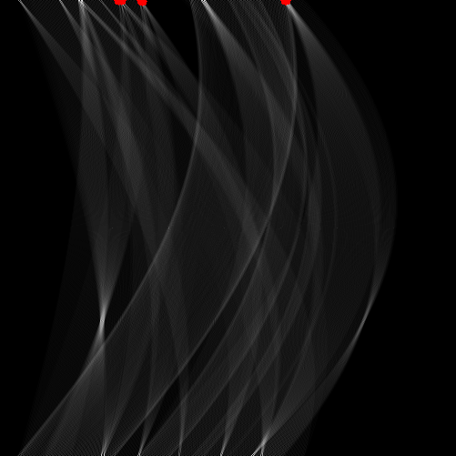 Maxima (red dots) detected using 0.9*maximum value(dots have been enlarged). (6 maxima) | 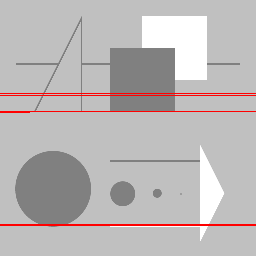 Lines corresponding to the maxima shown the left (threshold of 0.9*maximum). |
| 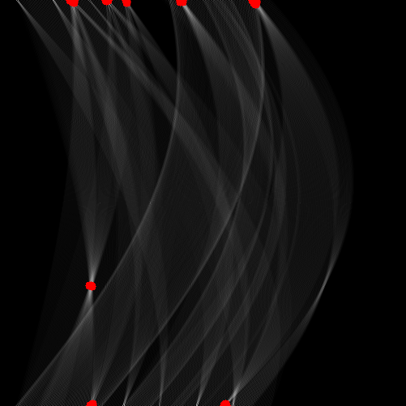 Maxima (red dots) detected using 0.7*maximum value (47 maxima). | 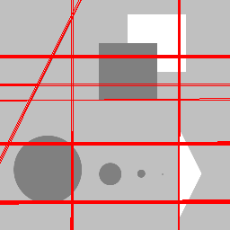 Lines corresponding to the maxima shown the left (threshold of 0.7*maximum) |
|
The above maxima were found without any gaussian blurring of the accumulator, or decrementation. These are just the maxima of the simple hough transform. | |
| 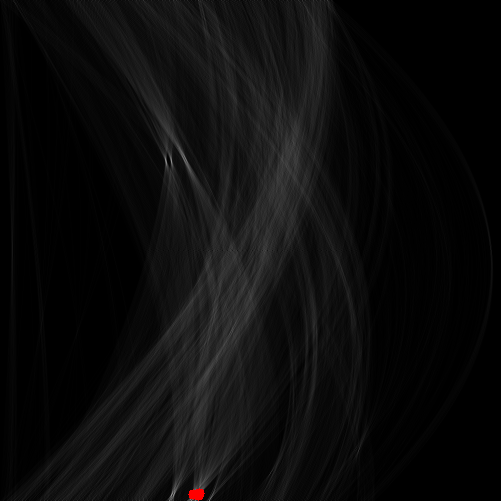 Maxima (red dots) detected using 0.9*maximum value(dots have been enlarged). (6 maxima) | 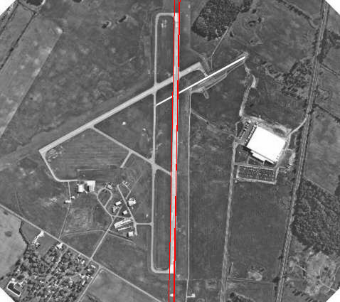 Lines corresponding to the maxima shown the left (threshold of 0.9*maximum). |
 Maxima (red dots) detected using 0.7*maximum value (47 maxima). |  Lines corresponding to the maxima shown the left (threshold of 0.7*maximum) |
|
Again, the above maxima were found without any gaussian blurring of the accumulator, or decrementation. These are just the maxima of the simple hough transform. | |
Gaussian Blurring on Accumulator | |
| 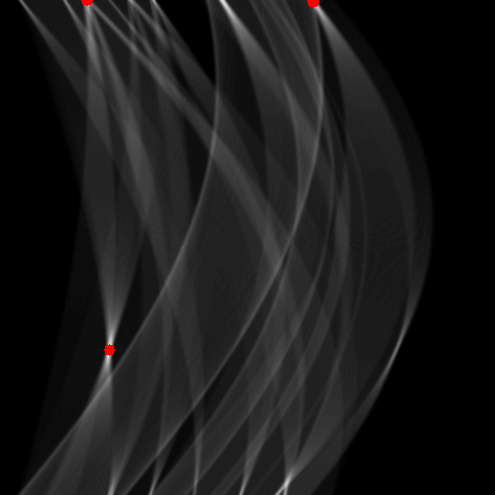 Maxima (red dots) detected using 0.95*maximum value(dots have been enlarged). (4 maxima) | 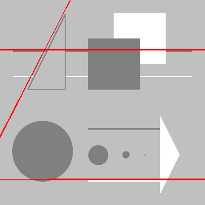 Lines corresponding to the maxima shown the left (threshold of 0.95*maximum) |
| 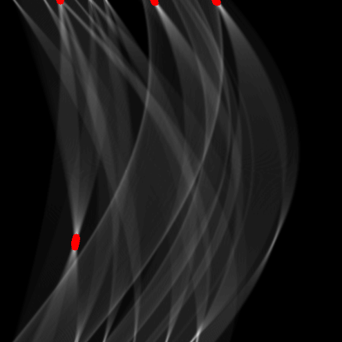 Maxima (red dots) detected using 0.9*maximum value (26 maxima). | 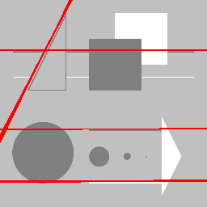 Lines corresponding to the maxima shown the left (threshold of 0.9*maximum) |
|
The above maxima were found using gaussian blurring with $\sigma=1$ of the accumulator. With the blurring, more points were closer the the global maximum value (using .9*maximum as threshold still had 26 matches). This makes sense, as the maximum has probably been lowered by the blurring, and other values may have been increased. | |
| 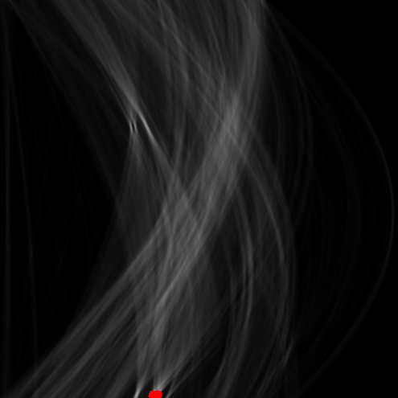 Maxima (red dots) detected using 0.95*maximum value(dots have been enlarged). (4 maxima) | 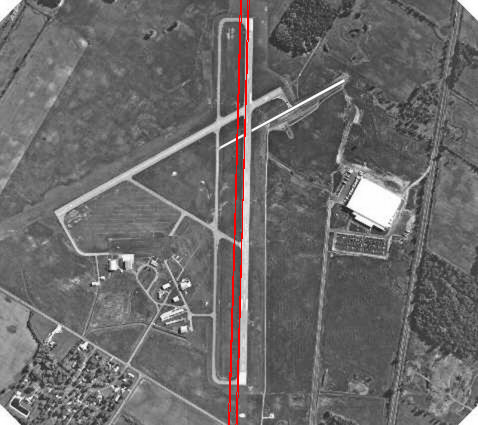 Lines corresponding to the maxima shown the left (threshold of 0.95*maximum) |
Maxima (red dots) detected using 0.9*maximum value (26 maxima). | 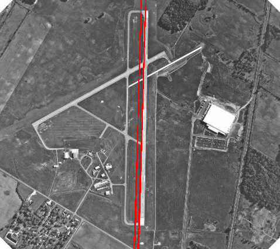 Lines corresponding to the maxima shown the left (threshold of 0.9*maximum) |
|
The above maxima were found using gaussian blurring with $\sigma=1$ of the accumulator. With the blurring, more points were closer the the global maximum value (using .9*maximum as threshold still had 26 matches). This makes sense, as the maximum has probably been lowered by the blurring, and other values may have been increased. | |
Decrementor on Accumulator | |
Maxima (red dots) detected using 0.9*maximum value(dots have been enlarged). (5 maxima) | 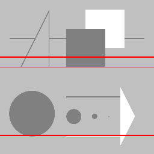 Lines corresponding to the maxima shown the left (threshold of 0.9*maximum) |
| 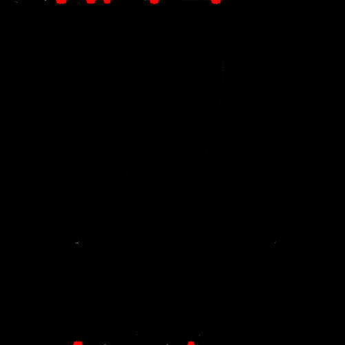 Maxima (red dots) detected using 0.7*maximum value (18 maxima). | 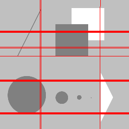 Lines corresponding to the maxima shown the left (threshold of 0.7*maximum) |
|
The above maxima were found using the decrementation approach described in the [1]. With the blurring, more points were closer the the global maximum value (using .9*maximum as threshold still had 26 matches). This makes sense, as the maximum has probably been lowered by the blurring, and other values may have been increased. | |
 Maxima (red dots) detected using 0.9*maximum value(dots have been enlarged). (5 maxima) |  Lines corresponding to the maxima shown the left (threshold of 0.9*maximum) |
| 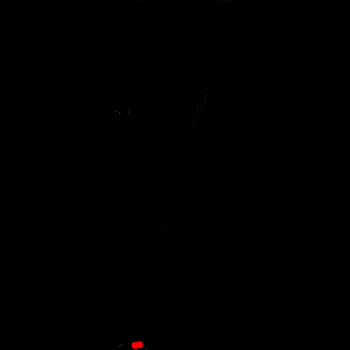 Maxima (red dots) detected using 0.7*maximum value (18 maxima). | 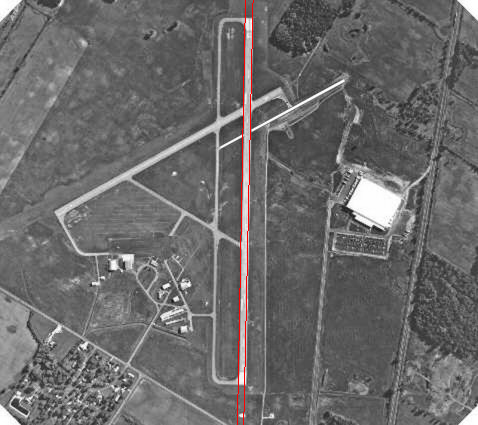 Lines corresponding to the maxima shown the left (threshold of 0.7*maximum) |
|
The above maxima were found using the decrementation approach described in the [1]. With the blurring, more points were closer the the global maximum value (using .9*maximum as threshold still had 26 matches). This makes sense, as the maximum has probably been lowered by the blurring, and other values may have been increased. | |
Original | Edge map |
Accumulation image ($\theta$ on x-axis, $\rho$ on y-axis) | |
|
The above example shows the hough transform for a straight line applied to the edge map of the image with runway above. As you can see the accumulator image shows the curves in parameter space representing each of the points on the edge map.
| |
References:
- Gerig, G. "Linking Image-Space and Accumulator-Space: A New Approach for Object-Recognition". ICCV 1987.